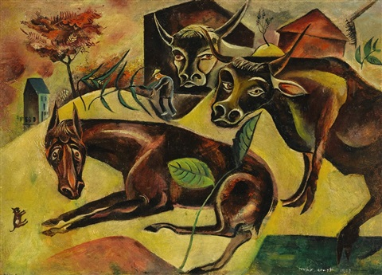

Max Ernst
Max Ernst (Brühl kraj Kölna, 2. travnja 1891. - Pariz, 1. travnja 1976.) bio je njemački kipar i slikar; suosnivač dadaizma i nadrealizma.
Životopis

Ernst (1891.- 1976.), samouki slikar iz Brühla u blizini Kölna, najprije je studirao na „Fakultetu Pisma” u Bonnu od 1909.-1911. god. Zainteresirao se za najnovija djela Picassa, Chirica, Mackea, te ekspresionizmom koji je tada bio trend među mladim njemačkim slikarima. Međutim, dadaizam je imao puno više odlučujući utjecaj na njega. Godine 1914. u Kölnu Max Ernst je upoznao Hansa Arpa koji je bio jedan od osnivača prve Dada skupine u Zürichu.
Zajedno s Baargeldom su stvorili Dada skupinu u Kölnu, a pod pokroviteljstvom Bretona izložba Ernstovih djela održana je u Parizu. S Arpom je napravio kolaže pod nazivom fatagaga (fabrikacija gazometrijskih slika) koji su najavljivali nadrealizam. Nakon posljednje izložba u Kölnu, skupinu je zatvorila policija, te Ernst odlazi u Pariz gdje je sudjelovao u nadrealističkim manifestacijama. God. 1921. konačno se doselio u Pariz, te je postao jedan od aktivnih osoba nadrealističke skupine koja je uključivala pjesnike kao što su: André Breton, Paul Eluard, Louis Aragon, Philippe Soupault, Robert Desnos i René Crevel, koje je predstavio na jednom od svojih platna, u društvu Rafaela i Dostojevskog.
Nakon dva europska rata Breton je prestao veličati njegov doprinos. Zamjerao mu je nagradu na Venecijanskom bijenalu 1954. god., pa se slikar na koncu našao na listi nepoželjnih članova nadrealističkog pokreta.
U svibnju 2013. godine ugledni povjesničar umjetnosti Werner Spies u Francuskoj je osuđen na visoku novčanu kaznu jer je krivotvorenu sliku proglasio originalom slikara Maxa Ernsta.
Djela

Uz Matissea, Picassa, Beckmanna, Kandinskog i Warhola, Ernst je nedvojbeno je jedan od najznačajnijih umjetnika 20. stoljeća, jedan od pokretača dadaizma, pionir nadrealizma i tvorac profinjenih tehnika kao što su kolaž, frotaža i grataža, dekalkomanija i oscilacija. Inventivan u primjeni slikarskih tehnika i izvora inspiracije, zbog čega je njegov opus praktički nemoguće jasno definirati i svrstati, Ernst je bio neumorna osobnost u konstantnoj potrazi za slobodom, rastrgan između želje za ostvarenjem osobnih životnih ciljeva i prevladavanjem društvenih i političkih prepreka u turbulentnom povijesnom razdoblju u kojemu je živio.
Kolaži Maxa Ernsta iz 1919. i 1920. godine predstavljaju bitnu fazu dadaističke umjetnosti. Samim karakterom kolažnih elemenata kojima je bio naklonjen, Ernst se približio opisnom izražavanju. Ernst je poput brojnih kolega proizvodio mračne obrasce na temu mučenja, nasilja, somnambulnih scena s likovima bezglavih žena, ptica, zmija, lavova, rupa, stabala i slično. Ono što ga pritom razlikuje od istomišljenika je tehnologija automatskog pisanja i kombiniranja bizarnih motiva. Pored toga, na njega je utjecala trodimenzionalna prostorna perspektiva i sanjalački iluzionizam Giorgia de Chirica, a prilagođavanje njegovom načinu rada udaljilo je Ernsta od ravnih crteža Jeana Arpa i obezbijedilo prijelaz koji je kasnije postao iluzionistička grana nadrealističkog slikarstva. Pokušaji Arpa i Ernsta da odu „iza slikarstva”, Arp svojim niskim, slikanim i strojno rezanim reljefima, a Ernst svojim kolažima, ne predstavljaju toliko duchampovski pokušaj anti-umjetnosti, koliko odgovor na osjećaj da je karakter predratnog slikarstva bio pretjerano hermetički i estetski. Njihov rad, zajedno sa slikarstvom de Chirica, stvorio je temelj za tradiciju poetskog slikarstva koje je nadživjelo dadaizam i nadahnulo četvrt stoljeća nadrealizma.
Njegovim će se obrascima okoristiti neki drugi autori, poput Jacksona Pollocka, čiju je buduću slikarsku praksu nagovijestio u prvim godinama azila na američkom tlu (1942.) kada je patentirao “mehanizam” za prolijevanje boje po platnu, bušeći rupu u dnu konzerve s bojom. Čak se u nekim segmentima nazire budući slikarski rukopis Gerharda Richtera, a vizualna metoda njegovih novela nagovještavala je također Burroughsovo i Gysinovo pisanje.

Horse and Cows, 1919